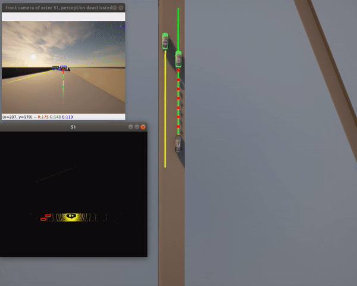
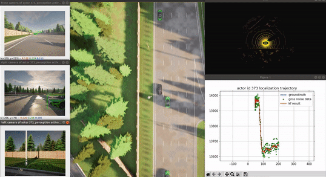
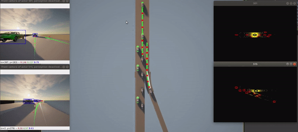

Quick Start Guide¶
Get started with OpenCDA for cooperative driving automation research and OpenCDA-MARL for multi-agent reinforcement learning scenarios.
| Component | Purpose | Requirements |
|---|---|---|
| OpenCDA Core | Cooperative driving scenarios | CARLA 0.9.15, Python 3.10 |
| ML Features | YOLOv8/YOLOv5 detection | PyTorch, CUDA (optional) |
| Co-simulation | Traffic flow generation | SUMO (optional) |
| OpenCDA-MARL | RL training environments | Gym, Ray/RLlib (planned) |
OpenCDA Scenarios¶
What it provides: Pre-configured benchmark scenarios for cooperative driving research
Parameters:
-t: Scenario name (must have matching.pyinopencda/scenario_testing/and.yamlinconfig_yaml/)--apply_ml: Enable ML models (requires PyTorch)--record: Record simulation for replay
Note: Version argument (-v) has been removed. OpenCDA now uses CARLA 0.9.15 exclusively.
Single Vehicle Tests¶
Features:
- 100 km/h target speed
- Safe traffic interaction
- Localization, planning, control modules active
- Perception disabled by default (no PyTorch needed)

Features:
- Full perception pipeline with ML
- Urban environment navigation
- Camera-LiDAR fusion
- Requires: PyTorch, CUDA (recommended)

Tip: Bounding boxes in non-ML mode come from CARLA ground truth. With --apply_ml, they're from the detection model.
Cooperative Driving Tests¶
# Test platoon stability under speed changes
pixi run python opencda.py -t platoon_stability_2lanefree_carla
Features: - 4-vehicle platoon - Dynamic speed changes - Time gap maintenance - Stability verification
# Cooperative merge and platoon joining
pixi run python opencda.py -t platoon_joining_2lanefree_carla
Features: - Mainline platoon with traffic - Cooperative merging from ramp - V2X communication - Real-time formation adjustment

Advanced Scenarios¶
Features: - Shared object detection via V2X - Extended perception range - Occlusion handling - Multi-vehicle fusion
Performance: Most scenarios run at 20 FPS simulation time on modern GPUs
Configuration & Customization¶
What you can modify: Scenarios, vehicle behaviors, perception models
# Create new scenario
from opencda.scenario_testing.scenario_manager import ScenarioManager
def custom_scenario():
scenario_manager = ScenarioManager(config, apply_ml=True)
# Spawn vehicles
cavs = scenario_manager.create_vehicle_manager(['custom'])
# Run simulation
while True:
scenario_manager.tick()
# Custom logic here
Tips:
- Check
opencda/scenario_testing/config_yaml/for configuration examples - Use
opencda/customize/for custom implementations - See YAML Configuration Guide for all options
OpenCDA-MARL¶
MARL Environment Setup¶
What it adds: Multi-Agent Reinforcement Learning capabilities for training cooperative driving policies
Development Status
OpenCDA-MARL is currently in Phase 1 development, refer to Phase 1 for more details. The following sections show planned usage patterns.
# PLACEHOLDER: MARL environment initialization
from opencda_marl import MARLEnvironment
# Create multi-agent environment
env = MARLEnvironment(
scenario="highway_merge",
num_agents=4,
observation_type="camera_lidar",
reward_type="cooperative"
)
# Environment follows Gym interface
obs = env.reset()
actions = policy.get_actions(obs)
next_obs, rewards, dones, info = env.step(actions)
# PLACEHOLDER: Custom MARL scenario
from opencda_marl.scenarios import MARLScenario
class CustomCooperativeScenario(MARLScenario):
def __init__(self, config):
super().__init__(config)
# Custom initialization
def reset(self):
# Scenario-specific reset logic
pass
def compute_reward(self, agent_id, action, next_state):
# Custom reward shaping
pass
MARL Training Examples¶
Note: MARL features are under active development. Check the MARL documentation for updates.
MARL Evaluation¶
Troubleshooting¶
| Issue | Solution |
|---|---|
| CARLA connection failed | Ensure CARLA 0.9.15 server is running on port 2000 |
| PyTorch not found | Install with pixi install or pip install torch |
| CUDA out of memory | Reduce batch size or use CPU mode |
| Low FPS | Try --quality-level=Low for CARLA server |
| SUMO errors | Verify SUMO installation and PATH settings |
More Information¶
- OpenCDA Users: Explore scenario testing and API documentation
- MARL Researchers: Check MARL overview and training guide
- Contributors: See contributing guide
- Related Documentation: